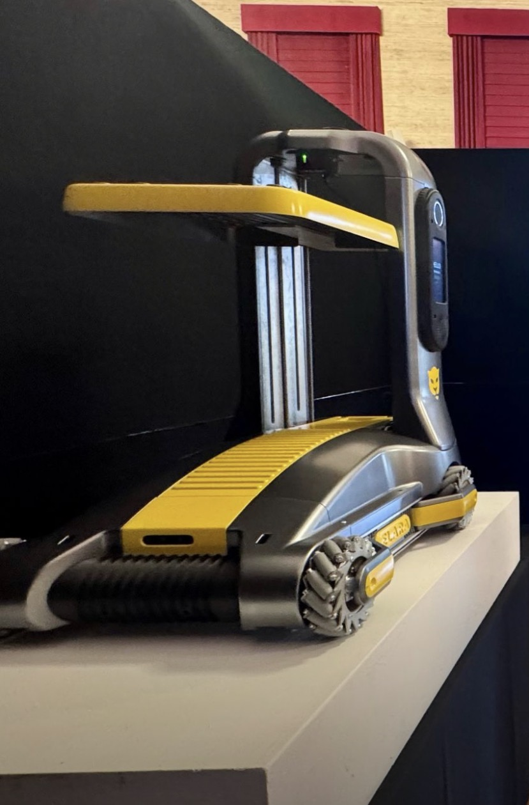
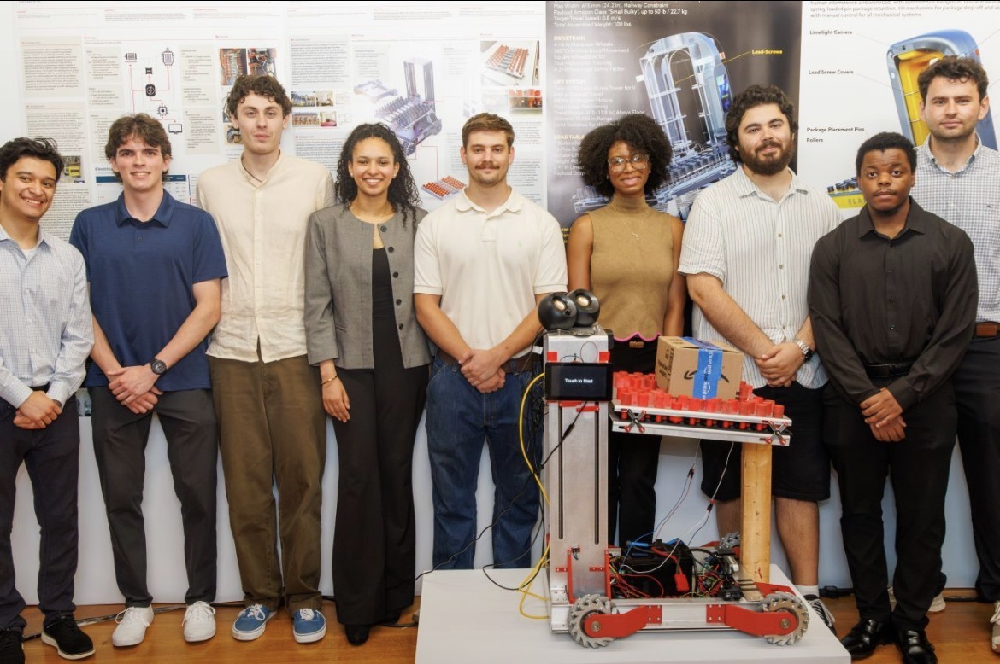

Capstone · Mechanical design
Assisted-Living Package Delivery Robot
Designed the robot’s chassis and wheelbase for a compact delivery platform intended to navigate assisted-living environments.
- Developed SolidWorks parts, assemblies, and fabrication drawings for an aluminum C-channel frame.
- Designed wheelbase extensions, motor cutouts, fastener locations, and a bottom plate.
- Supported fabrication and fit-up, adapting the build with spacers and 3D-printed brackets.


SolidWorksMechanical designFabricationPrototyping